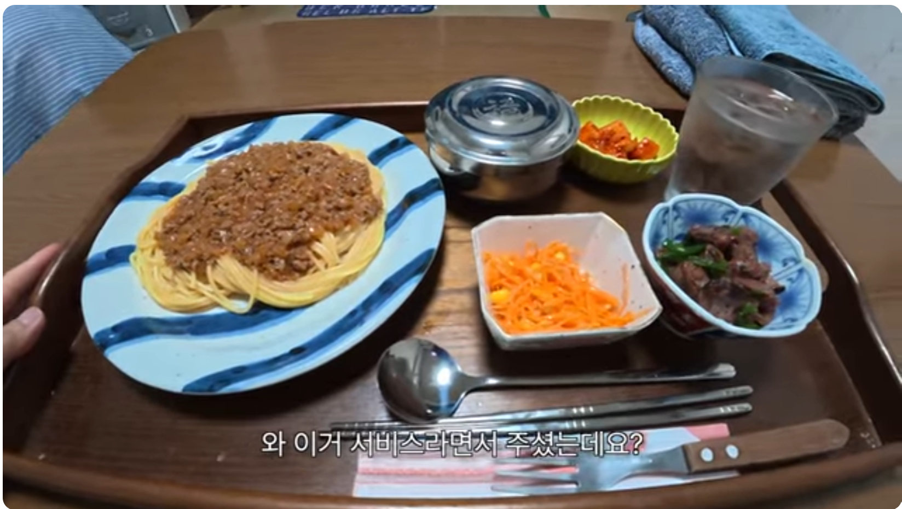

한국어 못하는 일본 민박집에
숟가락 젓가락은 그렇다 치고 저 밥공기가 왜 있어?

한국어 못하는 일본 민박집에
숟가락 젓가락은 그렇다 치고 저 밥공기가 왜 있어?
대마도
가져다 놨으니까 있겠지
일본이 수탈해갔다!
저 면요리가 밥반찬인거냐 ㅋㅋㅋㅋ
볶음밥을 반찬으로 밥을 먹는 지역이 있던거 같은데
이건 뭐야ㅋㅋㅋㅋㅋㅋㅋㅋ 면보다 한 술 더 뜨네
잡채는 유구한 밥반찬이다
우린 잡채를 가끔 반찬으로 먹잖아요
뭔소리야 그럼 잡채를 식사로 먹는 일이 있다는 말 같잖아
떡볶이를 밥 반찬으로 내는 나라에서 할 소리입니까?
요즘 유행인갑지
일본이 또 수탈해갔네
들고 먹는 문화니까 밥공기가 많이 안뜨겁길 바래야겠네
교토에 모 마구로 덮밥집도 한국숟가락있길래 여쭤보니까 한국마트 자주가신다고 ㅋㅋ
아이고 밥공기를 수탈해갔구나
젓가락에 학이 그려져있다면 수탈 그자체임
좆도 무리라니 말넘심ㅠㅠ
간사이 아님?